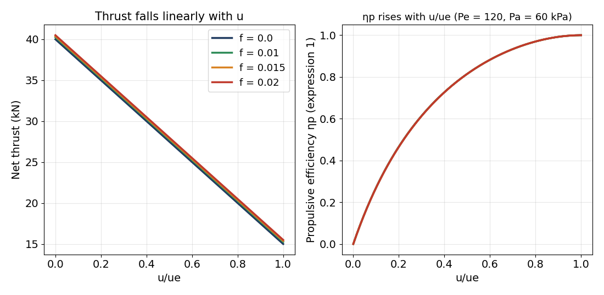

01. Introduction, principles of propulsion and engine classification
From the four forces on an aircraft to the engine classification tree: the action–reaction principle, the families of jet engines and their efficiencies.
CLO: CLO1Time (estimate): ≈ 6.5 lecture hours44 slidesQuestions: 120 (29 original)
Slide Ch.1 tr.5–48 · Cengel Ch.1–2 (background: review of AE1.030); Cengel §9-11 Ideal Jet-Propulsion Cycles (ref) · El-Sayed Ch.1 History and Classifications of Aeroengines, Ch.2 Performance Parameters of Jet Engines · Farokhi Ch.3 Engine Thrust and Performance Parameters (core); Ch.1 Introduction (ref, history) · Book content map
- State and explain the four forces in level flight and compute the required thrust from CD/CL and mass.
- Explain jet propulsion by reaction and why propellers (much air, little acceleration) have a higher propulsive efficiency than pure jets.
- Classify aerospace engines and describe turbojet, turbofan, turboprop, turboshaft, ramjet, pulsejet, scramjet, turboramjet, turborocket; tell direct from indirect reaction.
- Compute net thrust, propulsive, thermal and overall efficiency, TSFC, specific impulse and range for problems of El-Sayed Ch.2 and Farokhi Ch.3.
- Use the ISA and check the numbers of slide p.48 (264 hPa belongs to 10 km, not 11 km).
📷 The lecturer's original slides (click to enlarge)


Lecture
Detailed notes
1. Detailed content, slide ↔ book map
| Slide Ch.1 | Content | El-Sayed | Farokhi | Cengel (review) |
|---|---|---|---|---|
| 1–4 | cover, references + learning outcomes, chapter title, contents (confirmed by image: no academic content; outside m01) | — | — | — |
| 5–6 | four forces, Fz, Fx, P = mg | §2.2 (tr.76) | Ch.3 §3.5.5 (Breguet, pp.137–138) | — |
| 7–10 | role of the engine, action–reaction, propeller versus jet | §2.1–2.2, §2.4.1 | Ch.3 §3.1, §3.5.4 (tr.135–136) | Ch.1–2 (Newton, đơn vị) |
| 11–12 | energy E, compression – combustion – expansion | §1.3 | Ch.3 §3.5.3 (ηth) | Ch.2 (energy) |
| 13–16 | classification, rocket, piston | §1.3 Fig 1.35, §1.7 | Ch.1 §1.1–1.2 | — |
| 17–26 | why jets; ramjet, pulsejet, scramjet, turboramjet, turborocket | §1.2, §1.4.1–1.4.5 | Ch.1 §1.3 | — |
| 27–42 | gas-turbine family: turbojet, turboprop, turboshaft, turbofan | §1.5.1–1.5.6 | Ch.1 §1.2; Ch.3 §3.6 | — |
| 43–45 | direct/indirect reaction | §1.5.2–1.5.3, §2.4 | Ch.3 §3.5.4 | — |
| 46–47 | gas generator, turbo-air generator, APU | §1.6 (turboshaft công nghiệp) | — | — |
| 48 | classification by application: altitude – speed; ISA | §2.3.4 (ISA) | Appendix A (tr.937–940) | — |
Only sections I actually read are listed: the El-Sayed text, the Appendix A page images, page 54 (Problems 1.1–1.5) and the Problems 3.x pages of Farokhi. No formula was taken from Cengel's text layer (m01 is review only).
2. Five fully worked examples (numbers from scripts)
U = 0.8√(1.4·287·223.2) = 239.6 m/s. ṁc = 5/6·125 = 104.2 kg/s; ṁh = 20.8 kg/s; f = 0.75/20.8 = 0.036. Tfan = 0.75·24 = 18 kN ⇒ uec = 18,000/104.2 + 239.6 = 412 m/s; Tcore = 6 kN ⇒ ueh = (6000/20.8 + 239.6)/1.036 = 509 m/s. ΔK̇E = ½[20.8((1+f)ueh² − U²) + 104.2(uec² − U²)] = 8.07 MW. ηp = 24,000·239.6/8,068,258 = 71.3 %; ηth = 8,068,258/(0.75·42.8×10⁶) = 25.13 %; ηo = 17.91 %. Check: F·U/(ṁfQHV) = 17.91 %.
V0 = 2√(1.4·287·223.15) = 598.9 m/s; Dram = 25·598.9 = 14.97 kN; Fg = 25.75·1050 = 27.04 kN; Fn = 12.07 kN; TSFC = 0.75/12,066 = 0.2238 kg/(h·N); ΔK̇E = ½(25.75·1050² − 25·598.9²) = 9.712 MW ⇒ ηth = 30.25 %, ηp = FnV0/ΔK̇E = 74.40 %, ηo = 22.51 %.
ṁa = 200 kg/s, ṁf = 6 kg/s, u = 280 m/s, ue = 600 m/s, Pe = 30 kPa, Te = 750 K, Pa = 26.5 kPa. ρe = 30,000/(287·750) = 0.1394 kg/m³ ⇒ Ae = 206/(0.1394·600) = 2.463 m². T = 200(1.03·600 − 280) + 3500·2.463 = 67,600 + 8,622 = 76,222 N; T/ṁa = 381.1 N·s/kg; ηp = 0.669; ηth = 0.125; ηo = 0.0835; TSFC = 78.7 mg/(N·s); Mae = 1.12 (γ = 4/3).
℘s = FpropV0/ηprop = 5000·150/0.75 = 1000 kW; V9 = 1000/5 = 200 m/s; ΔK̇E = ½·5·(200² − 150²) = 43.75 kW (4.4 % of ℘s); F = 5000 + (1000 − 5·150) = 5250 N ⇒ ηp = 5250·150/(1,000,000 + 43,750) = 0.7545 (approximation F·V0/℘s = 0.7875).
S = ηoQR/g·(L/D)·ln(m1/m2) = 0.35·45×10⁶/9.8·17·ln(1/0.673) = 10,820 km. Fuel for the cruise leg: (1 − 0.673)·385,560 = 126,078 kg. ISA 11 km: T = 216.65 K, p = 226.3 hPa, a = 295.0 m/s; Ma 0.85 ⇒ u = 250.8 m/s.

3. Theory and history context
According to El-Sayed §1.2, in 1939 jet engines were still laboratory test items; by 1945 it was clear that the future of aviation lay with jets. Frank Whittle filed his turbojet patent in January 1930 (granted 1932); the W.1 (design thrust 1240 lb) flew on the Gloster E28/39 on 15 May 1941. Hans von Ohain was granted his patent in 1936; the Heinkel He 178 with the He S-3 flew first on 27 August 1939. The Messerschmitt Me 262 (Jumo 004B, 1980 lb each) was the first production jet aircraft, first flight 18 July 1942. Slide p.17 says only "dawn of the jet engine was in the 1940s". Propeller and jet both apply Newton's third law; they differ in the mass flow and the acceleration given to the gas. Chapter 2 will use the Brayton cycle to compute the jet speed that is taken as given here.
4. Aircraft application
From the slides: the ATR 72-500 (Vietnam Airlines) and Piaggio P-180 use turboprops; the Airbus A350 uses the Rolls-Royce Trent XWB (three spools) and the A320 family the CFM56 (two spools); the Concorde uses the afterburning Olympus 593 turbojet; the SR-71 Blackbird (Ma 3) is the turboramjet example; BrahMos is a ramjet cruise missile; the X-43A is a scramjet test vehicle. From El-Sayed: the Boeing 747 has four CF6 engines (Example 2.7: 24 kN each at 10 km, Ma 0.8). From Farokhi (Problems 3.1–3.4): the J57, JT3D-3B, JT8D and JT9D are real civil/military engines; the JT9D takeoff thrust of 43,500 lbf agrees with the 43,464 lbf computed from El-Sayed Problem 2.12.
5. Exam pitfalls
- Classification: the gas turbine sits in the jet branch of airbreathers; turboprop/turboshaft are indirect, turbojet/ramjet/rocket direct.
- The Trent XWB is 3-spool and the CFM56 2-spool (easy to swap).
- Slide p.48 numbers: 264 hPa corresponds to 10 km, 226.3 hPa to 11 km.
- High propulsive efficiency means low thrust per kg of air: no engine is best at every speed.
- Use 2u/(u + ue) only when Pe = Pa and f ≈ 0; always convert to m/s and N.
- Concept questions from the lecturer will follow the slides closely: note the figure labels (ramjet Inlet M > 1, Nozzle M = 1; "1 spool = 1 compressor–turbine assembly"; BPR = bypass/core flow).
Quick self-check (10 questions, originals first)
Deep practice
Open this module's question bank (120 + 24)
Jupyter notebook
Download the notebook (already executed, real outputs):
Source errors and doubts
- Slide Ch.1 pp.1–4 and p.49: images checked. p.1 = cover (USTH logo, A350-1000, title "Thermal System", partner logos), p.2 = references [1] Farokhi, [2] Cengel, [3] El-Sayed and four learning outcomes (structure of engines, working principle of turbine engines, engine indicating systems, starting and igniting systems), p.3 = chapter title, p.4 = four-item contents; p.49 = "Thank you for your attention". This matches the split in modules.py: no academic content outside pp.5–48. Note: p.2 lists "engine indicating systems" and "starting and igniting system" as outcomes but Chapter 1 does not teach them and m01's references have no matching section: recorded here, NOT DONE.
- Slide Ch.1 p.48: the tropopause "~10–11 km" is labelled 264 hPa. ISA (closed form, cross-checked by numerical hydrostatic integration): p(10 km) = 264.4 hPa (T = −50.0 °C), p(11 km) = 226.3 hPa (T = −56.5 °C). Farokhi Appendix A (SI; page image PDF p.940) has no 11 km row: 10 km = 2.650×10⁴ Pa (223.3 K), 12 km = 1.940×10⁴ Pa (216.6 K); the ISA formula differs from Farokhi's table by 0.24 % at 10 km, 0.36 % at 12 km and at most 2.1 % at 30 km. Conclusion: 264 hPa belongs to 10 km and −56 °C to 11 km; the slide pairs two altitudes. The other marks: 26 hPa at ~25 km (ISA 25.11 hPa) and 3 hPa at ~40 km (ISA 2.87 hPa; Farokhi table 2.871×10² Pa): rounded.
- Slide Ch.1 p.6: "Air density (attitude)" is a misspelling; altitude is meant. The fourth box holds only the symbol T_u, no expression; the site uses T_u = F_x = (C_D/C_L)·m·g (derived from F_z = P) and labels it as derived.
- Slide Ch.1: typos that do not affect content: p.14 "chambre", "Nozzel"; p.28 "Combustion Chambre"; pp.31–32 "Combuction chamber"; p.33 "Piaggo" (Piaggio); p.42 "Booste"; p.2 "Highrr Education".
- Slide Ch.1 p.25: "world's fastest jet-powered plane: Mach 3" is the slide's phrasing for the SR-71 (usually quoted Ma 3.2+); not checked. El-Sayed §1.4.4 describes the turboramjet as a turbojet up to Ma 3 then a ramjet, while §1.5.4 lists the SR-71's J58 among afterburning turbofans: book and slide classify the SR-71 engine differently (stated in the lecture, not chosen silently).
- Slide Ch.1 pp.40 and 42: "Trent XWB (3 spool)", "CFM56 (2 spool)": consistent with El-Sayed §1.5.4 (Rolls-Royce RB211/Trent three-spool; CFM56 two-spool); a bo_sung question tests the swap.
- Slide Ch.1 p.41: thrust values read from the chart are estimates ±3 thousand lb and the slide names no manufacturer; the site uses no read-off value for calculation questions. One engine on the chart has no label.
- Slide Ch.1 p.47: the slide does not explain W1 and W2 in the APU diagram; the site copies the labels only and invents no meaning.
- Slide Ch.1: 7 image-only/GIF/video pages (1, 15, 19, 21, 28, 33, 49) and pp.9, 16, 23, 29, 35 with animations only: the site only describes what is seen (e.g. p.23 is the black title frame of the video "Scramjet Engine Operation", Pratt & Whitney Rocketdyne), with no extra inference. OCR strings "98079", "INSEC", "LLLE", "135", "4350" are noise.
- p.44: the slide classes the turbojet as DIRECT reaction (main part of the energy is kinetic E_c, the rest E_m); the slide does not place the turbofan in pp.43–45: the lecture's remark on the turbofan is the site's own and is labelled as such.
- El-Sayed Example 2.4 (pp.83–86): the printed solution has several slips: the combustor line contains a meaningless "9,423²"; "T_Turbine = 145×10³×0.31 − 69.4×271 − 236,446" (a term missing); "4×10³×0.214" should be 41×10³×0.214; the nozzle is −25,118 in the solution and −25,198 in the summary table (correct value −25,198 N); also most component force lines in the book show only the final number, with no intermediate step. The site recomputes each component from F = P_e·A_e − P_i·A_i + ṁ(U_e − U_i) and the sum 49,304 N equals the whole-engine thrust (matching the final printed value).
- El-Sayed Example 2.7 (pp.100–101): the printed η_th is 25.46 % and "16.179×10⁶/(2×0.75×42.8×10⁶) = 0.2546"; recomputed it is 0.2520 (25.20 %) with the book's rounded numerator and 0.2513 (25.13 %) with unrounded speeds. The printed η_o = 17.93 % matches η_p·η_th = 0.712×0.2520 = 0.1794 (exact 0.1791), not 0.712×0.2546 = 0.1813. The site uses the recomputed value; the book is about 1.0 % high. Also in Example 2.6 "68.1 m/s" is written for a mass flow and the second η_p is printed "1.7304 = 170.04 %" (two different numbers).
- El-Sayed Example 2.1 (pp.79–80): "u = 18,910 ± 10³√(357.588 − 134.4)/60" is abbreviated; the roots 564.15 and 66.17 m/s agree with the recomputed 564.15 and 66.17.
- El-Sayed Example 2.10 (p.109): the data table gives 2.5 kg/s of fuel but the TSFC uses 2.65; wing area 26.4 m² but the computation uses 66.4; density "650,000 ft" should be 65,000 ft; the site makes no question from this example (NOT DONE: contradictory data).
- El-Sayed Example 2.9 (p.108): takeoff mass printed 385,560 kg but the product uses 385,650; no effect on the 10,819 km range (the site computes ≈ 10,819.6 km with g = 9.8 and the exact ln(1/0.673)).
- El-Sayed §2.3.4: the printed ISA pressure formula P(bar) = 1.01325 − 0.000112z + 3.8e⁻⁹·z (the OCR lost the exponent): not used; the site uses the full ISA formula (T = 288.15 − 0.0065z; p = p0(T/T0)^5.2559) and compares with Farokhi's table.
- El-Sayed Problem 2.5 (pp.123–124): two problems merged in one paragraph (first part: three η_p formulae; second part: prove η_o,max, find flight speeds, QR, range, time, m1, m2, thrust). The site keeps both as "first part"/"second part". In the second part the fuel flow during the leg is not stated: the site assumes constant ṁf = f·ṁa and says so in the solution. With η_o,max and η_o = 0.16 the two speed roots are symmetric about u = (1+f)ue/2; the range is the same for both.
- El-Sayed Problem 2.13: the problem asks for m1 and m2 but gives neither air nor fuel flow, so it cannot be solved: the site solves only parts (1)–(4) (flight speed, QR, maximum range, time). It says "stated in Problem 2.2" but η_o,max is defined in Problem 2.5/Example 2.8.
- El-Sayed Problem 2.12: given in British units (lbm, ft/s, Btu/lbm); the site uses g_c = 32.174 lbm·ft/(lbf·s²), 1 Btu = 778.169 ft·lbf and neglects fuel mass in the core stream (4.3 lbm/s of 247 lbm/s). The static thrust of 43,464 lbf agrees with the 43,500 lbf takeoff thrust printed in Farokhi Problem 3.4 (JT9D).
- El-Sayed Problem 2.19: the data give an ESFC below the typical range 0.45–0.60 lb/(h·hp) that the book quotes (p.104): the 0.393 lb/(h·hp) result comes from the problem data.
- El-Sayed Problem 2.4 (thrust reversal): no deflection angle is given; the site assumes full 180° reversal and states this in the question source.
- El-Sayed Ch.1 Problems 1.1–1.52: mostly descriptive/historical/recall (compare Flyer I and A380, Leonardo da Vinci, Hero, Wright, engine lists…) needing figures or outside lookup. The site uses as short essays (goc) only the ones answerable from the chapter text: 1.21, 1.22, 1.23, 1.24, 1.32, 1.47, 1.48. Dropped: 1.1–1.20, 1.25–1.31, 1.33–1.46, 1.49–1.52 (history, type lists needing outside lookup, or needing figures P1.42–P1.52 that the OCR holds without labels).
- El-Sayed Ch.2 Problems dropped: 2.1 (needs the wind-angle figure), 2.3 (rocket canted 30°, figure missing), 2.6, 2.10, other proof parts of 2.11 (2.11 itself kept as a proof), 2.7–2.9, 2.14–2.15, 2.24, 2.26–2.27, 2.31 (need plots; the site has a self-drawn figure for 2.7), 2.16–2.18 (long proofs), 2.20 (duplicate of 2.2), 2.22 (missing data: TSFC and L/D allow several readings), 2.23 (biofuel data truncated in the OCR), 2.25 (T_eh, T_ec data mixed with the p_eh/p_ec label), 2.28–2.30 (kinematics: 2.28 and 2.29 kept; 2.30's comparison table is cut).
- Farokhi Ch.1 Problems: kept 1.1–1.3, 1.4, 1.5; Ch.3 Problems: kept 3.5, 3.6, 3.7(b), 3.8, 3.9(a–d), 3.10, 3.11, 3.13, 3.17(a). Dropped: 3.1–3.4 (need numbers read from the engine figures P3.1–P3.4, whose tables the OCR does not give reliably), 3.12 (needs a plot), 3.9(e) (propulsive efficiency: not used), 3.14–3.16 (outside the pages read), 3.17(b–d).
- Farokhi Examples 3.5/3.6: the book prints "52.6 % increase" for 88.9 % against 36.3 %: that is 52.6 percentage points (88.9 − 36.3), the relative rise is 144 %; η_p = 36.36 % exactly, the book prints 36.3 % (truncated, not rounded).
- Farokhi Example 3.4: it cites "Equation 3.34" but the definition of η_th is Eq. 3.50 (the equation number in the solution does not match); the result 49.2 % is right.
- Farokhi Problems 3.2/3.3/3.4: the total temperature/pressure tables are inside figures (P3.2–P3.4) that the OCR reads only jumbled; not used.
- The syllabus says Tutorial 0 h although Tutorials I exists (known); the syllabus misspells author [1]; slide p.2 writes "Saeed Farokhi" (correct) and "Highrr Education" (Higher). The OCR copy was patched.
- Generated questions (bo_sung): each number is computed by closed form and recomputed by another route (sympy, scipy brentq/quad/solve_ivp, numerical hydrostatic integration for the ISA, numerical control-volume balance) in build/verify/verify_m01.py: 258 comparisons, FAILS: none. Level-3 questions in m01 are mostly multi-step (turbofan efficiency, Breguet, ISA + Mach, Ex 2.3, Ex 2.5, Ex 2.7); the conceptual part of the chapter has almost only levels 1–2: no artificial level-3 padding.
- El-Sayed Examples 2.5/2.6 (p.96): the book remarks that with the effective jet velocity u_e′ = u_e + (P_e − P_a)A_e/ṁ_e the second propulsive-efficiency expression equals the first "exactly". Recomputed for Example 2.5: u_e′ = 808.2 m/s and the two expressions give 0.4593 and 0.4602: equal only for f = 0 (they differ by the (1−f)u² versus u² term). And ≈ 0.46 is far below η_p = 71.56 % computed with the real u_e: the two calculations answer different questions (whether the unexpanded pressure energy of the jet counts as wake loss). The site keeps the book's printed answer (71.56 %) and notes this.